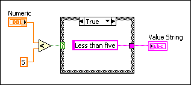

Create a probe when you want to have more control over how LabVIEW probes the data that flow through a wire. When you create a new probe, the data type of the probe matches the data type of the wire you right-click. Refer to the caveats and recommendations before you begin creating custom probes.
Complete the following steps to create a custom probe.
|
Note If you are creating a custom probe for a LabVIEW class or interface data type, some of the steps listed below may vary depending upon whether you are creating a custom probe that is a member VI of the class or interface or a custom probe that is not a member VI of the class or interface. The changes are noted where appropriate below. A custom probe that is a member VI of a class is a member probe and has the ability to access the private data of the class directly. Member probes can display any aspect of the private class data. A non-member custom probe may only display information accessible via the public interface of the class. |
|
Note If you are creating a non-member probe for a LabVIEW class or interface, follow the instructions above. If you are creating a member probe for a LabVIEW class or interface, you can save the custom probe in the subdirectory where you save the other member VIs of the class or interface to ensure that the class or interface items remain together for easy distribution. |
|
Note LabVIEW automatically wires the control to the To Probe String function. You can remove the To Probe String function to specify the string you want LabVIEW to display in the Value column. |

The previous figure shows a custom probe of a wire that contains numeric data. You can use a Case Structure to tell LabVIEW to display Greater than five or Less than five rather than the default, which is to display the data that passes through the wire. |
Note If you are creating a probe for a LabVIEW class or interface data type, the Create New Probe dialog box does not make the new probe a member of the LabVIEW class or interface by default. If you want the probe to be a member probe of the class or interface, you should add the member probe to the class or interface. |
To use the probe you created, right-click the wire again and select Probe from the shortcut menu. After you create a probe, that probe becomes the default probe for that data type, and LabVIEW loads that probe when you right-click the wire and select Probe from the shortcut menu. To change the default probe for a data type, right-click a wire of that data type, select Custom Probe from the shortcut menu, and select a supplied, custom, or generic probe from the shortcut menu.
|
Note If you create a probe for a LabVIEW class or interface and then move the LabVIEW class or interface to a different machine or you reinstall LabVIEW on the current machine, the default probe that users of the class or interface can use is the generic probe. A custom probe is not the default probe for any data type until you use it on the machine. However, if you create a member probe you can use the Class/Interface Properties dialog box to set the custom probe as the initial default probe for the class or interface. Now when you distribute the class or interface to a new machine, the default probe the user of the class or interface can use is the custom probe rather than the generic probe. |
To edit an existing probe, open the probe VI or use the Create New Probe dialog box to create a new probe based on the existing probe.